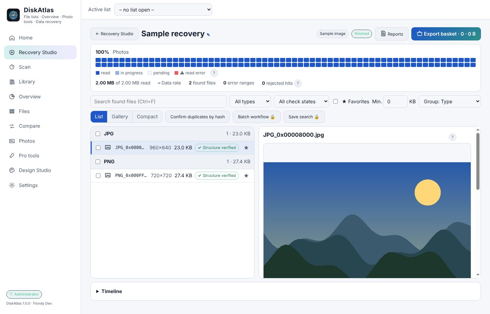

DiskAtlas
Datenrettung & Dateilisten für Windows und Android · Flondy Dev.
Fotos und Dateien sicher zurückholen. DiskAtlas findet Fotos und Dokumente in Datenträgerabbildern anhand ihres Inhalts, zeigt sie groß an und exportiert sie in einen getrennten Ordner. Jede exportierte Datei wird per SHA-256 geprüft. Die Quelle wird nur gelesen.
Funktionen
- Rettungsstudio: Trefferliste links, große Vorschau mit Zoom rechts
- Exportkorb mit Namenskonflikten und Prüfbeleg (JSON + CSV)
- Sitzungen mit Verlauf, Favoriten, Duplikaten per Hash und Wiederaufnahme
- Dateilisten: Übersicht, Suche, Duplikate, CSV, Vergleich
- Windows: Laufwerke, Abbild erstellen, NTFS-Undelete, S.M.A.R.T.
- Designstudio mit Anprobe – inklusive Edelsteinatelier mit 23 Steinen



Datenschutzerklärung · Nutzungsbedingungen · Kontakt: flondy.dev@gmail.com